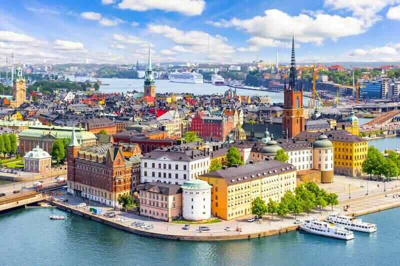
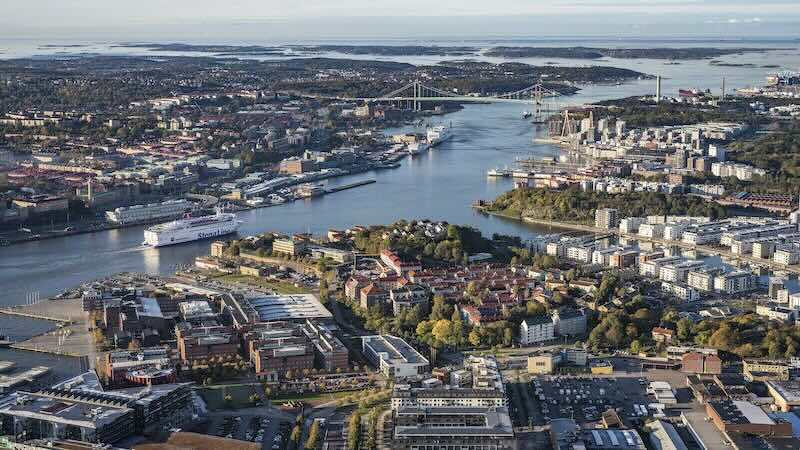

Main Cities in Sweden
-

Stockholm
Stockholm, the capital of Sweden, encompasses 14 islands and more than 50 bridges on an extensive Baltic Sea archipelago. The cobblestone streets and ochre-colored buildings of Gamla Stan (the old town) are home to the 13th-century Storkyrkan Cathedral, the Kungliga Slottet Royal Palace and the Nobel Museum, which focuses on the Nobel Prize. Ferries and sightseeing boats shuttle passengers between the islands.
-

Gothenburg
Gothenburg, a major city in Sweden, is situated off the Göta älv river on the country's west coast. An important seaport, it's known for its Dutch-style canals and leafy boulevards like the Avenyn, the city's main thoroughfare, lined with many cafes and shops. Liseberg is a popular amusement park with themed rides, performance venues and a landscaped sculpture garden.
-
Malmö
Malmö is a coastal city in southern Sweden. It lies at the eastern end of the striking Öresund Bridge, a long road and railway bridge–tunnel running to Copenhagen, Denmark. In the city center, Lilla Torg is a cobblestone square with cafes, half-timbered houses and shops selling local handicrafts. Malmö Castle, a 16th-century fortress built by King Christian III of Denmark, houses nature, history and art exhibits.